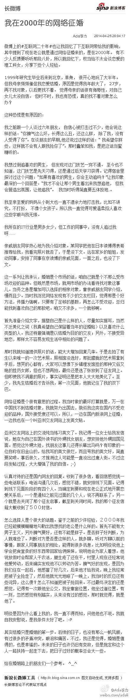

//@Heatherana:说得更通俗点，就是要有远见和忧患意识 ，主动脱离自己的安全区，push自己接受各种挑战，不断充实和进步，扩展安全区范围，以防未来各种变故，而非温水煮青蛙，享乐和安于一成不变等同于慢性自杀，一旦意外来袭，心理承受和知识技能架构会多米诺骨牌般崩塌。要以万变应不变。@Ada李力:@张辉forestsong 在微信公众号“改变自己”上发了一篇很好的文章《职场如何反脆弱》。举了《反脆弱》书中的一个例子：约翰25年来一直在一家大银行的人事部门任职，他的孪生弟弟乔治是一名出租车司机。平均收入与他哥哥的收入相差无几，但收入不稳定。问题来了，谁的工作更加稳定一些？
//@BeijingOpenParty: OpenParty化身大型生活服务类活动！Ada贡献的话题“理科女如何找男朋友”也太实用了一点吧，看看长微博先学习下～到场的理科妹子可以好好get经验，围观的单身工程师可以偷偷物色妹子：P 别忘了这周六下午来东直门ThoughtWorks办公室围观～>> 网页链接@Ada李力:我在2000年的网络征婚：微博上的#互联网二十年#也让我回忆了下互联网带给我的影响，其中提到了现在老公就是通过网络征婚来的，是在2000年。 有不少人反馈要听听那段八卦，所以就回忆下，权当给...文字版>> 网页链接 （新浪长微博>> 网页链接） 
帮转//@Seraph_Yang: aws终于来上海了。09年望到14年，大神来了。@Ada李力 @CloudStack中国 @CSDN @CSDN云计算 @大数据 @大数据联盟 @Grozen@亚马逊云科技:【亚马逊AWS游戏行业研讨会上海站】继AWS游戏行业研讨会北京站取得热烈反响后，AWS将于5月14日移师上海。了解AWS如何帮助游戏客户快速部署和扩展，利用大数据分析优化运营。现场更有意想不到的惊喜！抓住最后报名的机会网页链接
技术人员的短板，可能就在于因为拿了锤子，到处找钉子敲。 //@姜太文:咚咚跳的感觉太可怕了，有建养鸡场的苗头儿。@Ada李力:昨天被技术问题卡住后，颇烦恼。睡一觉起来后，先干些别的，看看培训视频，忽然对那个问题有了解决的思路，试了下，搞定！！！ 好久没有体会到心口咚咚跳，这种激动的感觉了。
//@孢子响马: 实在找不到钉子就只好开源了 //@Ada李力:技术人员的短板，可能就在于因为拿了锤子，到处找钉子敲。 //@姜太文:咚咚跳的感觉太可怕了，有建养鸡场的苗头儿。@Ada李力:昨天被技术问题卡住后，颇烦恼。睡一觉起来后，先干些别的，看看培训视频，忽然对那个问题有了解决的思路，试了下，搞定！！！ 好久没有体会到心口咚咚跳，这种激动的感觉了。
不讲故事，这次主要讲策略和方法。 //@Justin麒麟:这么快又有活动了，每次都想提交话题，好像又来不及准备了这里会有ada和明俊的故事吧？有时间要去听一听@Ada李力:我在2000年的网络征婚：微博上的#互联网二十年#也让我回忆了下互联网带给我的影响，其中提到了现在老公就是通过网络征婚来的，是在2000年。 有不少人反馈要听听那段八卦，所以就回忆下，权当给...文字版>> 网页链接 （新浪长微博>> 网页链接）
好人不好做……//@沈逸_程序员在囧途_创办者:回复@Ada李力:其实很为难，又不忍。。。。 //@Ada李力:对这类网友的态度，怎么做才好呢？鼓励继续写那样的文章，对TA来说是好事吗？对你来说，仅有精神，也是可以接受的么？@程序员在囧途:昨天一个网友投稿，大约是讲述一个产品心得。大约有2000个字。数了一下，共200多个错别字，没有标点符号、没有分段，竟然里面还有涉政观点。虽然没通过，但是网友的精神可嘉，最后我寄给他一罐啤酒。网友晚上喝了，说是对未来顿时充满了信心。我顿时有种莫名的感动。